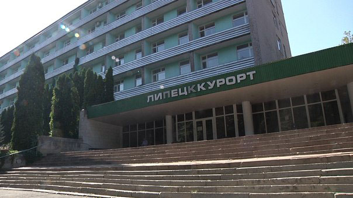
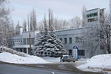
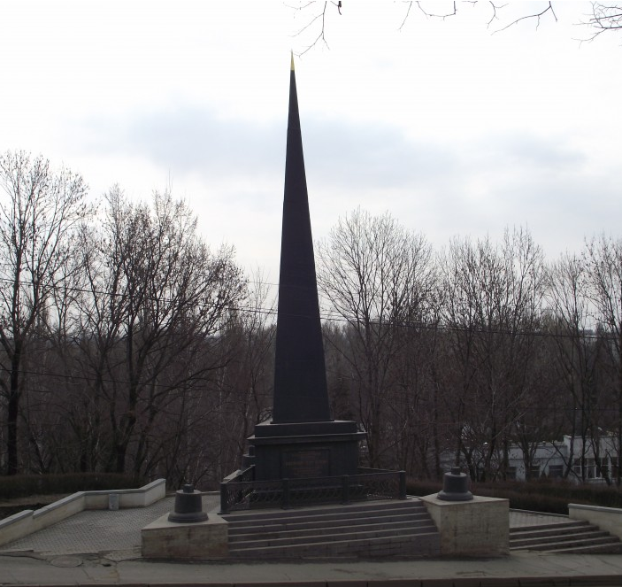
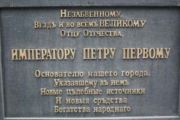

Санаторий "Липецккурорт"
Липецккурорт — курорт в Липецке. Расположен в Нижнем парке.
История
XIX — начало XX века
Предшественником курорта был «госпиталь для мастеровых» при Липецких заводах. Он был на том месте, где в 1966 году годах построили новый корпус санатория. Воду брали из колодца, над которым было сооружено здание наподобие небольшой часовни.
В начале XIX века, усилиями липецкого врача, доктора Вандера, на липецкие воды было вновь обращено внимание. Была учреждена особая дирекция для управления курортом. Указ о создании курорта «Липецкие минеральные воды» был подписан Александром I 25 апреля (8 мая) 1805 года. Под него отвели территорию на окраине Липецка на месте закрытого ранее Липского железоделательного завода. Курорт расположился на берегу Петровского пруда, где заводчане добывали воду.
При строительстве первых зданий курорта в 1803—1804 годах снесли заводские корпуса. 19 июля 1805 года утверждается генеральный план застройки курорта.
В 1805 году курорт получил «общегосударственное» значение. Директором стал Иван Николаевич Новосильцев.
17 мая 1805 года стали строить первый капитальный объект — минеральные ванны (арх. А. Н. Воронихин и С. Мельников). Это здание сохранилось до наших дней; на его втором этаже находится администрация парка, а на первом — склад.
В 1806 году по проекту С. Мельникова построен госпиталь. Это 2-этажное деревянное здание было рассчитано на 52 пациента. Одновременно создается Английский парк по проекту Жаака; он получает название Нижнего парка Липецких минеральных вод.
В 1808 году в парке строится бювет — сооружение над минеральным источником. Это был деревянный шатер на четырех столбах, затем перестроенный в каменный.
В 1812 году начал строиться новый бювет — на месте домика Петра I (см. Нижний парк). Достраивался он вплоть до 1824 года. В 1930 году здание снесли.
В 1865—1867 годах у подножия Соборной горы (на ней находится Соборная площадь) — напротив входа в парк построили 1-этажную гостиницу. В 1895—1897 годах здание расширили: надстроили два этажа, а на Петровском спуске возвели 3-этажную кирпичную пристройку (снесли в 1974 году). После расширения гостиница вмещала 34 номера.
В августе 1903 года рядом строится 2-этажное здание, в котором было паровое отопление и электрическое освещение. С тех пор число отпущенных ванн составляло 5—12 тыс. в год.
Изображения:


Обелиск Петру I в Липецке
Обелиск был установлен 1839 году, имеет статус регионального памятника архитектуры и является самым старым памятником Липецка. Установлен он на середине Петровского спуска, у дороги, ведшей к минеральным источникам и сооружениям Липецкого курорта. Он хорошо просматривается как с вершины, так и с подножия холма. Памятник стал символом Липецка, у которого отдыхают и фотографируются жители и гости Липецка.
Изображения:


Санаторий "Липецккурорт" на карте:
|